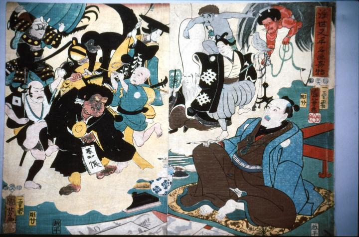

← 图鉴索引

大津絵の画題を思い浮かべる浮世又平。四代目小団次の役者絵。
著作者：歌川国芳／出典：親書誌：M80_naprstek_0001：浮世又平名画奇特；ウキヨマタヘイメイガノキトク／日付：2011／資源識別子：M80_naprstek_0001_0001_0000
Copyright (c)2010- International Research Center for Japanese Studies, Kyoto, Japan. All rights reserved.